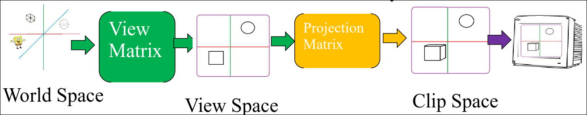
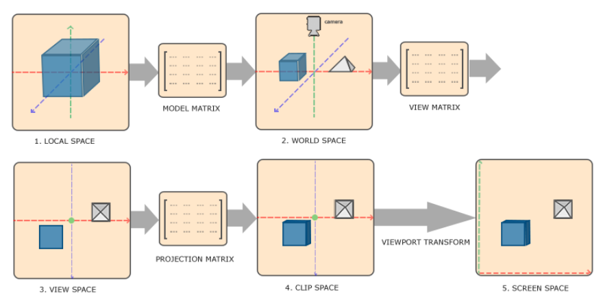
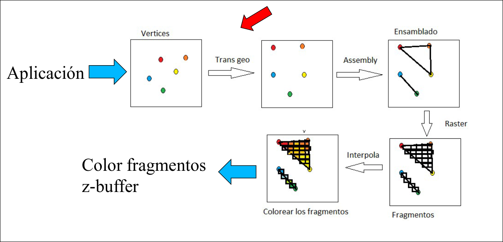
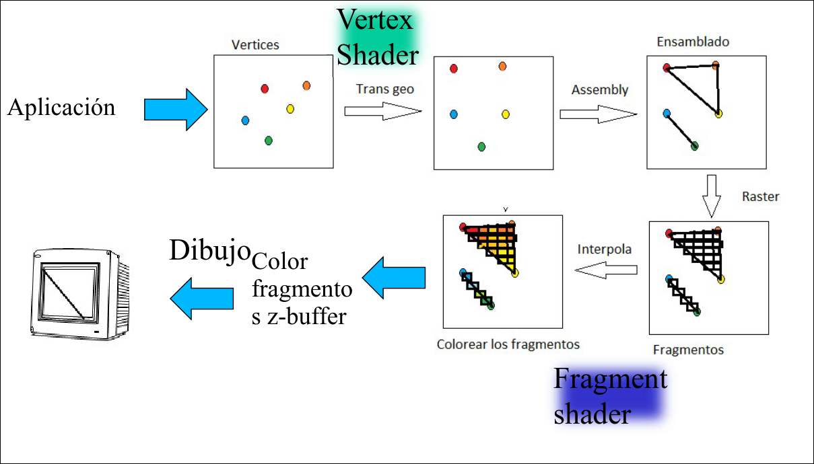
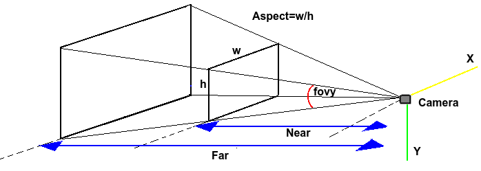
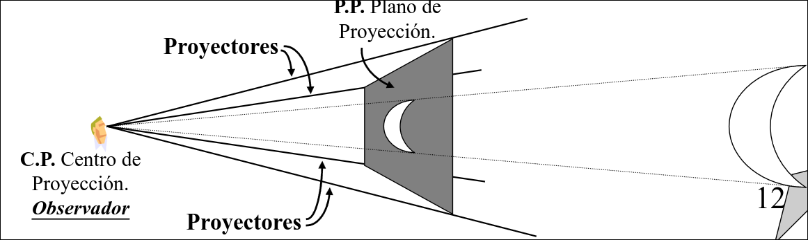
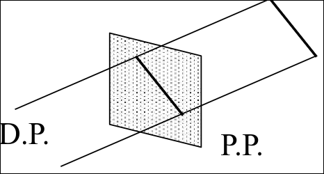
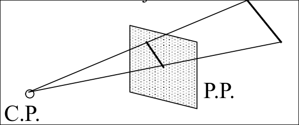
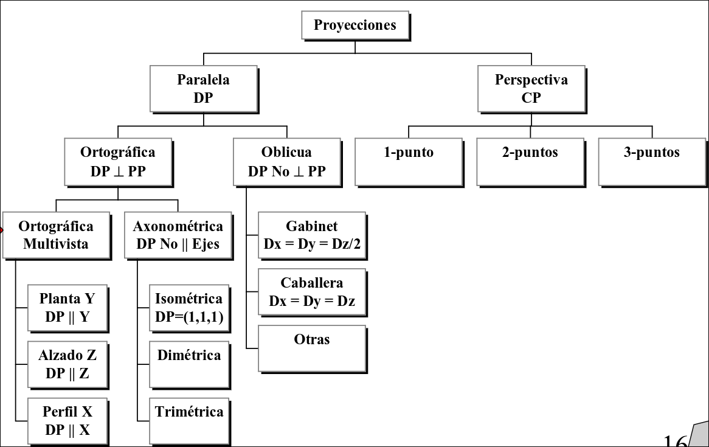

Visión
4.1 View Space
El View Space es el sistema de coordenadas de cámara o de punto de vista del observador. La View Matrix transforma las coordenadas de escena a coordenadas de cámara mediante una combinación de traslaciones y rotaciones.
No existe una matriz separada para aplicar transformaciones a la cámara:
- En el view space, la cámara se ubica siempre en el
mirando hacia el eje - Para conseguir esto, se deberían realizar ciertas transformaciones sobre la posición de la cámara en el world space.
- En su lugar, a la escena se le aplica la inversa de las transformaciones que se le aplicarían a la cámara.
El Clip Space es el sistema de coordenadas tras el recorte de los elementos que están fuera del frustrum. Las coordenadas que quedan en el clip space son procesadas y se pueden convertir en fragmentos visibles por pantalla.
El Frustrum es el volumen de visión de la cámara, es decir, el área del espacio que la cámara verá. Por defecto, el frustrum es [-1,1],[-1,1]. Este rango corresponde al espacio de coordenadas normalizadas.
La Projection Matrix permite cambiar las dimensiones del frustrum. Después de aplicar la matriz de proyección se realiza una división perspectiva que convierte las coordenadas del clip space a NCD (normalized device coordinates), diviendo cada componente


En la pipeline fija (Opengl 1.2) el paso de coordenadas de escena a coordenadas del clip space se corresponde con el paso transformación geométrica.

En el retained mode (Opengl 3.3) el paso de coordenadas de escena a coordenadas del clip space se realiza mediante el vertex shader.


4.2 Proyección
Una proyección es una transformación que reduce la dimensionalidad de una espacio, normalmente de
4.2.1 Elementos de una proyección
- Escena: elementos 3D que componen el mundo virtual
- Plano de proyección: superficie 2D en la que se representan los objetos 3D. En la práctica se corresponde a la pantalla o viewport.
- Punto de vista o centro de proyección: posición desde donde se observa la escena. En la práctica se corresponde a la ubicación de la cámara
- Proyectores: rayos imaginarios que se trazan desde los puntos del objeto hasta el CP. Los puntos en los que intersecan con el PP determinan dónde de dibujará cada punto del objeto en la imagen final.

4.2.2 Tipos de Proyecciones
Proyección ortográfica o paralela
El CP está situado en el infinito, por lo que los proyectores son paralelos entre sí. Se define una dirección de proyeción en vez de un CP

Proyección perspectiva
El CP está situado en el espacio, por lo que los proyectores forman un cono cuyo vértice es el CP.

Proporciona realismo visual, da sensación tridimensional, no mantiene la forma ni la escala.Proyección ortográfica multivista.
El PP es perpendicular a algún eje, por lo que se necesitan varias vistas para obtener una vision 3D de los objetos.
- Planta: el PP es perpendicular al eje Y
- Alzado: el PP es perpendicular al eje Z
-
- Perfil: el PP es perpendicular al eje X Es posible realizar medidas precisas. Todas las vistas tienen la misma escala. No se obtiene una visión 3D del objeto.
